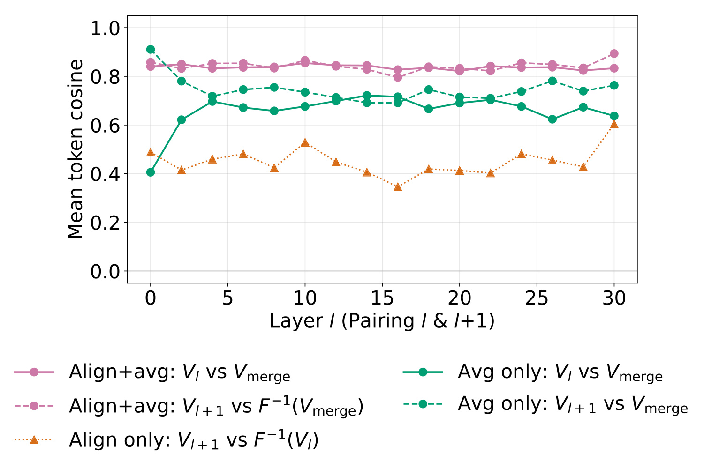
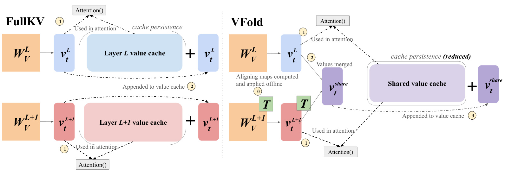
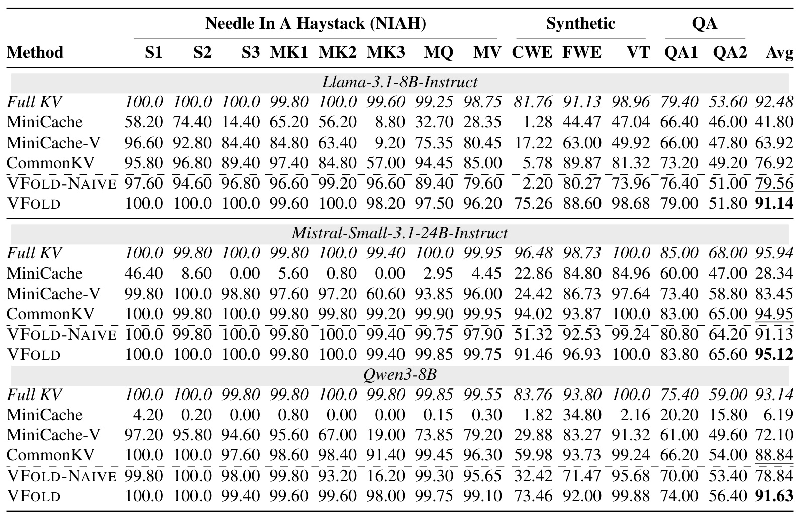
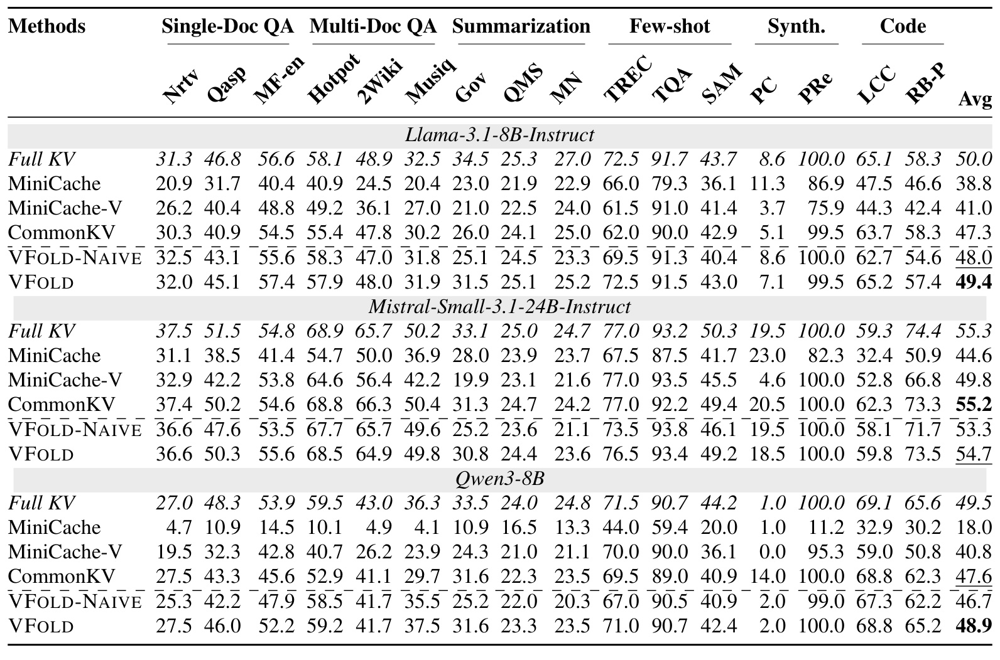
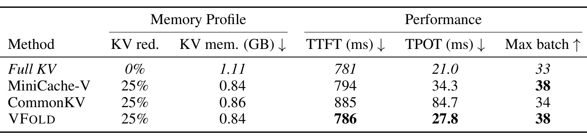
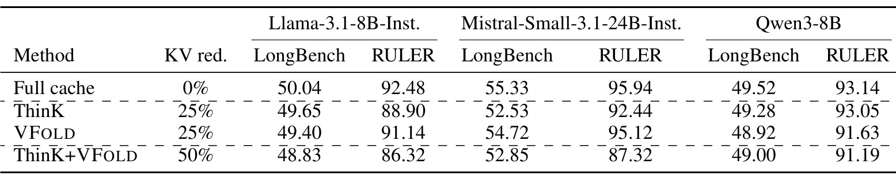
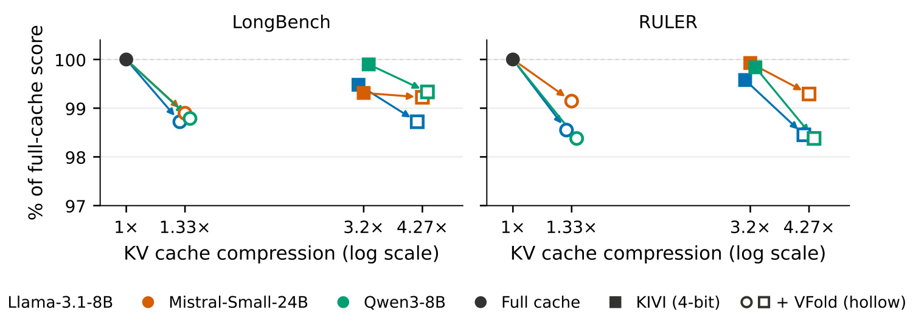
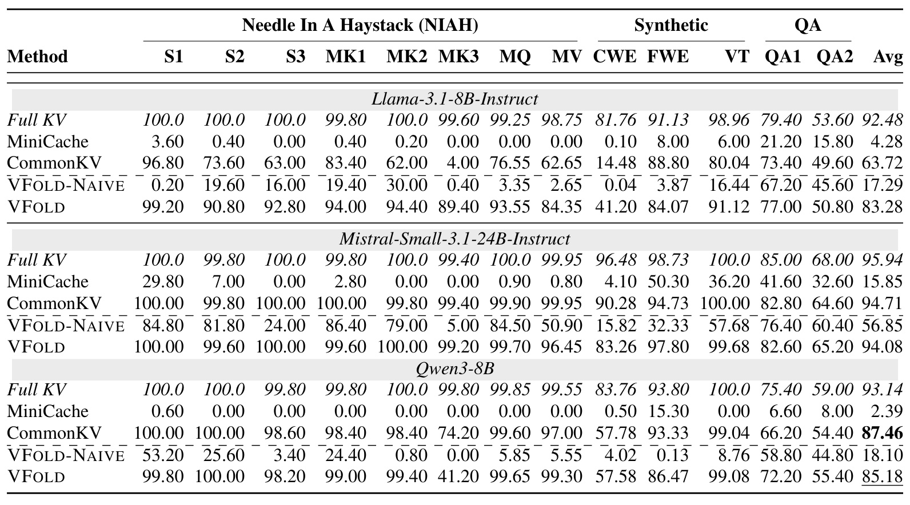

VFold：把相邻层 Value 缓存对齐到同一坐标系再共享
- 论文：VFold: Symmetry-Aware Cross-Layer Value Cache Compression
- 作者：Neha Verma、Sungwon Kim、Kenton Murray、Kevin Duh
- 机构：Johns Hopkins University；George Mason University（Kenton Murray）
- 首次公开：2026-10-08；笔记日期：2026-10-12
- 论文入口：arXiv:2610.12338
- 代码：nverma1/vfold，本轮已打开核验。核心头对齐、CCA折叠与共享缓存实现已公开；仓库说明评估、基线与组合实验代码将后续发布，不能视为完整实验复现包。尚未在本地运行模型。
- 阅读范围：17页完整PDF，含主文与附录A—F。以下性能均为作者报告，未独立复现。
长文档与代码仓库让推理系统需要长期保存历史信息，但缓存容量会挤压可服务的请求数。VFold利用相邻层值表示的潜在相似性，为已有模型提供离线对齐与在线共享方案；值得读的重点，是精确重参数化怎样为有损压缩创造条件。
相邻层缓存存在相似子空间，为什么直接共享仍会丢失能力；能否先把值坐标对齐，再以较小在线开销保存一份历史？这是依据原文摘要及第1节引言对共同子空间、解码重建成本与MiniCache性能代价的忠实转述，下面分开考察结构、精度和容量收益。
1. 背景和问题
1.1 长上下文推理为什么需要跨层压缩
长上下文的成本并不只来自参数规模。自回归生成每一个新token时，注意力需要访问已有前缀的键和值。KV缓存把这些中间状态留下来，避免每一步重新计算整个前缀，但缓存会随序列长度、请求批量、层数以及KV头维度线性增长。论文以fp16的Llama-3.1-8B为例，权重约16GB，八条16K上下文的KV缓存又约16GB；这说明在长请求与批量服务结合时，即使权重已经能装进GPU，缓存仍可能限制并发。在此场景下，压缩缓存的主要目标可能是让更多请求同时驻留，或者容纳更长的文档，而不必然是让单请求的每个输出token更快。
常见压缩从不同维度动手。token驱逐决定保留哪些历史位置，量化减少每个元素的比特数，低秩表示减少向量维数，跨层共享减少重复保存的层数。它们压缩的对象与损失方式不同，因此不能只比较“压缩比例”一个数字。驱逐可能把任务相关证据整个删掉；量化保留所有位置却改变数值；低秩方法经常要在每步恢复高维状态；跨层共享则把不同深度的表示当成可以复用的对象。VFold聚焦最后一条路线，但只共享Value而保持Key，这一选择来自作者对注意力两种角色的实证分析，而不是统一削减全部缓存。
跨层共享对从头训练的模型相对容易：可以在架构定义时让若干层依赖同一缓存，并让训练适应这种设计。对已经训练好的模型直接修改就困难得多，因为每层表示都有自己的坐标系和功能。把层号相邻当成语义完全相同，通常会造成严重误差；重新训练则会改变压缩技术的使用门槛。作者希望得到一个后处理方案，利用一小批校准数据把已有权重重新参数化，使跨层缓存更接近，然后在推理时分享近似的值。这里“已有模型可用”只意味着不需要额外梯度训练，并不意味着无需校准、无需修改权重文件或无需实现缓存逻辑。
1.2 相似子空间不等于可以直接平均
论文第3页Figure2考察Llama-3.1-8B-Instruct在GSM8K上的相邻层表示。注意力输入的余弦相似性较高，作者认为残差连接是一个可能原因；然而直接对应的Key和Value余弦相似性接近零。换成对旋转和尺度不敏感的CKA之后，两种缓存都显示较高相似性。这个结果提示，两个层可能编码相近的信息，却以不同基底表示。类比两个坐标系中的同一个向量：逐坐标平均之前若不先转换基底，得到的结果可能没有清晰语义。CKA只能支持存在潜在共享结构的判断，不能直接证明某个可逆线性映射足够，也不能证明任意压缩不会改变任务输出。
作者进一步在第4页Table1做了有区分度的动机试验。使用GSM8K、八样本思维链提示与贪心解码，对不重叠的相邻层对分别直接平均Key或Value，且保护最前四个token与最近128个token。完整缓存准确率为80.7%，平均Key后跌至2.7%，平均Value仍为79.5%。两者都具有较高CKA，却表现截然不同，这就是不能把“潜在相关”机械转换为“可以共享”的证据。这个三行试验也有边界：它只覆盖一个模型和一个任务，包含保护窗口，不是关于所有任务、所有层或无保护合并的定理。后面的三模型长上下文评估才是扩大经验范围的主要证据。
为什么Value相对稳定？Key参与查询与历史位置的匹配，扰动Key会改变注意力logit，随后softmax可能放大这种变化，最终导致读错位置。Value描述从已选位置取回的内容，注意力加权后仍通过线性输出投影，平均误差更有可能被后续线性组合缓冲。论文用“可能解释”描述这种角色差异，笔记保留这个措辞，因为作者没有给出对全部Transformer成立的误差界。尤其在精确计数、多键检索和长距离依赖中，Value的小扰动仍可能让结果失败，不能把值压缩当成普遍安全的操作。
1.3 本文真正要解决的矛盾
既有低秩方案可以利用共享子空间，但通常会把每步的值先压缩再恢复，在注意力计算前已经发生近似；恢复高维表示也会产生运行开销。MiniCache使用球面插值合并相邻缓存，减少架构改动，却可能付出较大准确率代价。VFold的中心思路是把“寻找共同坐标系”放到离线，用注意力内部的可逆对称性吸收映射，然后把“不可逆共享”放到当前注意力已经完成之后。这样，离线步骤在数学上保持函数，在线步骤才引入缓存近似，两个误差来源可以被分别检查。
这项工作的研究价值在于把缓存的冗余和模型的参数对称性连接起来。参数对称性通常用于模型合并、旋转量化或结构裁剪；这里它为之后的跨层值平均创造更好的几何条件。目标不是新增一个预测网络，而是让已有Value投影输出更易平均、并让Output投影抵消这次坐标变换。真正保存到共享缓存的是对齐后的向量，因此之后读取不需要每次调用一个额外的恢复模块。这也解释了为何作者强调架构开销较低，但仍报告保护窗口管理造成的实际延迟。
理解全文需要守住三个口径。第一，二层共享使可合并部分的Value减半，若Key与Value原本同规模，总KV的理想减少量是25%，并不是50%。第二，函数不变只适用于头置换与可逆映射折叠，历史值平均是有损近似。第三，不改变注意力算子不等于推理零开销：运行时仍要保护最近token、维护共享状态并更新平均值。以下方法和实验都围绕这些区别展开，避免把论文摘要的“minimal cost”扩大为全系统免费加速。还需要区分缓存存储容量和模型总体显存：权重、临时激活、工作区和调度元数据并不随Value共享同比例缩小，所以不能把总KV减少百分比直接用于GPU总占用。类似地，批量容量增加只有在显存是实际瓶颈时才会兑现；如果请求受到算力、延迟或调度限制，更多可驻留序列未必转化为等比例服务吞吐。这些限制不是否定压缩，而是帮助在不同目标下正确读表。
2. 方法
2.1 逐头CCA与匈牙利匹配：先找到可以比较的坐标系
原文第4节首先计算相邻层Value的对齐映射。对参考层与下一层，每个KV头在校准token上给出一个矩阵，行是token，列是头内维度。CCA寻找两组变量中高度相关的线性组合，作者据此构造把下一层值映射到参考层坐标的可逆矩阵。由于注意力头具有不同的权重分布，不能把不同头的维度任意混合成一个大映射，否则会破坏对应的注意力运算。作者因此先评估所有候选头配对，计算逐头CCA，再利用匈牙利算法寻找总误差最低的头置换。
为什么不能把头序号相同直接当成匹配？头的索引是参数化约定，层间相同编号不保证承担相同的信息功能。作者先为所有候选配对计算误差，再解离散匹配问题，避免一个局部看似合适的头选择让其他头失去对应对象。对每个候选配对，原文式(3)—(4)定义如下，这个全局目标与逐头贪心选择不同：
符号解释：其中，$V^{h_i}_{\ell}$是参考层第$i$个KV头在校准token上的Value矩阵，$T_{ij}$将下一层第$j$头对齐到参考坐标，$\|\cdot\|_F$是Frobenius范数，$\Pi_{n_{kv}}$是$n_{kv}$个头的全部置换集合。代价用逆映射比较，是原文的方向约定；它不表示解码时每步真的要执行逆变换。找到最优置换后，逐头映射组成块对角矩阵，各头保有自己的注意力语义，同时在层间得到更一致的对应关系。
附录B补全CCA的数值构造。设两个已配对头的值分别为$V_1,V_2\in\mathbb R^{n\times d_h}$，作者采用带正则的二阶统计并对交叉协方差白化：
符号解释：这里$n$是校准token数量，$d_h$是KV头维度，$I$为单位矩阵，$U,S,Z$为奇异值分解结果。为避免与Value符号混淆，笔记把原文SVD右奇异向量的$V$写作$Z$，矩阵关系不变。正则项保证逆平方根更稳定；实现使用数值逆，闭式逆用于检查。校准采用128个WikiText-2样本，每个2048token，这是一项有数据依赖的离线适配，而不是完全无数据压缩。

Figure3来自第5页，是验证“对齐和平均必须一起用”的直接几何证据。横轴为相邻层对，纵轴是平均token余弦相似度；粉色曲线把对齐后的均值与两层原始Value比较，其中后一层的比较需要把均值映回其坐标系。两条粉色曲线大多接近0.85，说明共享值对两边的近似都比未经对齐的均值更好。绿色曲线表示直接平均，约在0.7附近；橙色曲线表示只用另一层重建本层，其相似度更低。这不是说原始缓存完全相同，而是共享值处于两个对齐对象之间，并保留两者信息。图的held-out数据是GSM8K，映射由WikiText-2拟合，因此也提供了有限的跨数据集检查。附录Figure6在校准数据上接近0.9，测试集略低；这种差距提醒读者不要把校准集拟合程度等同于真实任务泛化。余弦相似性改善是方法动机，最终能否保住能力仍须由下文RULER和LongBench衡量。更细地比较图中的两条粉色曲线，可以看到平均值不仅对参考层保持相似，对另一层映回后的相似性也接近同一水平，这说明改善并不是仅偏向一个源缓存。原文对齐单独使用的橙色曲线明显低于均值，表示完全拿一个层的值替代另一层比保留两边贡献更困难。绿色未对齐均值的两条曲线也不完全重合，提示层间表示的尺度和方向并非对称。横轴覆盖模型不同深度，相似性改善在多数相邻层出现，但图中没有逐点置信区间，也没有比较不同校准量，所以它只能证明当前拟合设置下的系统性趋势。把这一图与Table2的Naive对照合看，才可判断几何改善是否真的转化为任务能力；单看约零点八五的曲线无法承诺每个输出正确。
2.2 注意力对称性与GQA折叠：把变换吸收到权重
折叠保持函数，为什么缓存共享仍会掉分？因为抵消关系只发生在一个头内部的值投影与输出投影之间，要求完整值仍被保留；跨层平均是在此关系之外另加的有损步骤。将精确变换先独立写出，能够避免把几何对齐与信息删减混成一个操作。每个注意力头可以写成原文式(1)—(2)的线性值路径：
符号解释：$X$是该层输入，$A^h$是由Query与Key得到的注意力矩阵，$W_V^h$和$W_O^h$是值与输出投影，$T_h$是头内可逆映射。矩阵结合律使$T_hT_h^{-1}$互相抵消；因此只要不压缩缓存，就可以用$W_V^hT_h$替换原值权重，用$T_h^{-1}W_O^h$替换输出权重而保持计算函数。这里要求可逆，不要求正交；这给CCA较大的自由度，也需要检查条件数和低精度折叠误差。等价关系成立于实数算术，有限精度下还存在舍入差异，论文附录专门测量了这个问题。
三个评估模型均使用GQA，一个KV头服务多个Query头。置换一个KV头时，相应Query头必须作为一组同时移动，输出矩阵也必须跟着移动。原文附录A令$g=n_q/n_{kv}$，定义$P_{kv}=P\otimes I_{d_h}$、$P_q=P\otimes I_{gd_h}$，并把逐头逆映射重复到每个Query头的输出块。完整折叠如下：
符号解释：其中$P$是最优头置换矩阵，$\otimes$为Kronecker积，$T$是逐KV头块对角CCA矩阵，$T_q=\mathrm{blockdiag}(I_g\otimes T_1,\ldots,I_g\otimes T_{n_{kv}})$。Query与Key只做同步置换，不进行跨维度值映射；Value接受置换和坐标变换；Output负责恢复。因此“保持Key缓存”仍允许离线改变头存储顺序，这两者没有矛盾：键的信息不被平均或删减。Qwen的QK-Norm实现按头共享RMSNorm权重，作者说明这种头置换不会与归一化冲突，不能据此推断任意QK-Norm变体都自动兼容。
同样的任意线性映射不能直接套到Key上。现代模型通常在QK路径使用RoPE，映射要保持注意力函数就需要与位置旋转交换，这会限制可用自由度，也可能干扰已融合的注意力内核。Value—Output路径没有这一约束，是VFold能离线吸收CCA的结构原因。离线折叠之后的模型参数规模与原来一样，映射不以独立网络形式在每步执行。它的代价转移到了校准与新checkpoint准备阶段，而真正的在线误差则留给下一节的共享操作。
2.3 注意力之后再合并：保护窗口与多层递增均值
对相邻两层，经过折叠之后，下一层的Value已经处于参考层坐标。作者使用的共享缓存为：
符号解释：$F$由头置换和CCA映射组成，已吸收在权重里，式子只是概念表示。运行时先计算当前token的完整值并供该层注意力使用，随后才把它与同组层的值合并，追加到共享历史缓存。历史读取因此是近似的，当前新值的计算避免了低秩方法那种“先压缩再用于注意力”的额外近似。但当前输出仍依赖先前已经合并的历史，所以这句话不等于整个当前注意力与完整缓存完全相同。误差会通过历史内容影响未来生成，必须以任务评估判断是否可接受。

Figure1第2页展示完整缓存与VFold的不同执行顺序。左侧蓝色、粉色分别是两层自己的历史值，新token生成的值各自追加，因此相同位置会跨层保存两份。右侧的绿色$T$对应离线步骤，逆矩阵已经放进Output投影所以图中省略；随后两层的新值先进入各自的Attention，最后才汇入紫色共享值并持久保存。读图时应关注箭头的先后，而不只看紫色缓存少了一份：如果在Attention之前平均当前值，就会失去作者特意保留的当前步完整值计算。图里的“共享”只画Value路径，Key仍逐层保存，不能从视觉上误读成整个KV缓存减半。离线变换利用精确对称性，紫色平均节点则是有损操作，这也是为何两个阶段需要分开解释。实际实现还保护四个attention sink和128个最近token，图没有展开保护窗口；这些值暂时仍有独立表示，离开滑动窗口时才合并。因而理论Value减半是长历史部分的比率，短上下文或窗口占比较大时实际显存节省会更小。作者的Table4把生成后的保护token纳入显存，避免只报理论容量。共享逻辑也必须保证同一token的两层值都已经产生再覆盖缓冲，否则会错误地提前使用另一层状态。图支持低额外投影开销的解释，却不支持“运行时完全无操作”的结论。
对于四层或更多层，附录D不链式累乘相邻映射，而选中间层为参考，每个其他层独立对齐到它，以减少沿层传播的映射误差。组内共享值是$k$个对齐值的平均，可合并Value减少至原来的$1/k$。运行中不同时保存$k$份完整缓存，而采用递增均值：
符号解释：这里$i$是组内相对层序，$\widehat V_i$为已经处理前$i+1$层后的缓冲均值。这等式说明只需要额外暂存一层参与平均，避免压缩前的峰值临时占用扩大为整个层组。$k=4$时Value理想减少75%，总KV理想减少37.5%；它不是在二层结果上免费增加压缩，后文表明合并更多层会带来明显任务退化。保护窗口和sink策略仍适用，较大的层组也让校准数据、层功能差异与数值稳定性更值得检查。
3. 实验结果
3.1 评估设置与公平比较的口径
作者在Llama-3.1-8B-Instruct、Mistral-Small-3.1-24B-Instruct、Qwen3-8B上评估，分别具有32、40、36层。RULER采用16K长度，包含单针、多键、多查询、多值检索及聚合等合成任务；LongBench覆盖单文档问答、多文档问答、摘要、少样本、合成任务与代码。RULER的优势是更集中地检验长历史是否保留并能精确访问，LongBench则更接近混合自然语言任务。两个均值都不能直接解释为真实产品的成功率，也不能跨基准比较数值高低：各任务评分指标与分布不同，论文先在基准内取平均再比较压缩前后能力保持程度。
基线包括完整缓存、MiniCache、只压缩Value的MiniCache-V、CommonKV与不做对齐的VFold-Naive。MiniCache默认只在后半层合并Key和Value，MiniCache-V在所有层只合并Value，以匹配25%总KV减少。CommonKV共享低秩表示，按模型调整合并组数和rank来匹配比率；它只压缩prefill，对生成token保留完整缓存，Qwen的QK-Norm也采用了重建后归一化的适配。因此这些是尽量对齐总体预算的工程比较，而不是除一个变量外全都相同的严格控制试验。最能分离CCA对齐作用的是VFold对VFold-Naive，因为两者都使用注意力之后的平均和相同保护策略。
3.2 RULER：均值保持之外，要读失败任务

Table2第6页保留完整任务分组表头与三个模型的全部数据行，最后一列是平均分。完整缓存到VFold分别为Llama的92.48→91.14、Mistral的95.94→95.12、Qwen的93.14→91.63，下降1.34、0.82、1.51点；相对保持率约98.55%、99.15%、98.38%。这是作者“每个配置至少98.3%”说法的主要证据之一，不能误读为98.3%的任务绝对准确率。与Naive相比，三模型平均提升分别为11.58、3.99、12.79点，说明对齐并非无关紧要的装饰。Llama的CWE从Naive的2.20恢复到75.26，但仍低于完整缓存81.76，体现了明显救回与残余损失同时存在。Qwen的多键MK3从16.20恢复到98.00，差异尤其醒目；若只看某些已经接近100分的单针列，可能低估方法价值。表中CWE、FWE属于聚合相关任务，其表现与单针列很不同：Llama的单针三项在VFold下均为一百分，CWE却为七十五点二六，低于完整的八十一点七六；Qwen的CWE七十三点四六也低于完整的八十三点七六。因此，即使检索某个位置的能力保住，遍历并综合多个位置的能力仍会损失。最后一列对所有这些任务取平均，没有按具体业务重要性加权。更合理的迁移判断应保留每种任务的压缩前后差，而不能用接近九十二分的总分抵消关键计数任务的退化。
与CommonKV比较，Llama的91.14对76.92高14.22点，Qwen的91.63对88.84高2.79点，Mistral的95.12对94.95只高0.17点。也就是说优势高度依赖模型，不能把最大的14.2点写成三模型都成立。MiniCache原始版本的Qwen平均只有6.19，Value-only版本提高到72.10，验证了保留Key的重要性；但VFold仍比Value-only球面插值更好，表明键值不对称只是必要设计方向，尚需合适对齐和执行时序。基线表现差并不单独证明其在所有原始使用场景都无效，因为这里任务长度、模型适配和压缩设置都特定。对生产验收，值得直接复制这种分任务表：重要的精确聚合需求不能被容易任务的高分淹没。
3.3 LongBench：自然任务较稳，但没有全胜

Table3第7页横跨六种任务类型，完整保留了旋转任务列名。以展示精度为准，三模型的完整均值/VFold均值为50.0/49.4、55.3/54.7、49.5/48.9；更精确的小数可从Table5的同一设置看到50.04/49.40、55.33/54.72、49.52/48.92，分别约下降0.64、0.61、0.60点。相对保持率均在98%以上，这说明二层Value共享在该混合自然任务集上较温和。对齐相对Naive的均值增益约1.4、1.4、2.2点，远小于RULER部分任务的增益，符合自然文本允许一定语义冗余、合成精确任务更敏感的解释。但这只是对表格模式的解释，论文没有证明任务敏感性的统一机制。还可从表内的代码列观察局部差异：Llama的LCC六十五点一到六十五点二几乎持平，RepoBench-P五十八点三到五十七点四则略降；Qwen的LCC六十九点一到六十八点八、RepoBench-P六十五点六到六十五点二同样没有全部无损。两个任务都属于代码相关评估，却不具有相同输入与评分口径，因此不能把一列保持良好写成代码场景已经普遍安全。
最值得保留的反例是Mistral：CommonKV平均55.2，VFold54.7，完整缓存55.3；因此VFold不是所有六个模型—基准组合中的第一名。作者写五个设置最优，正是因为这一组例外。逐列看也存在退化，例如Llama的Qasper46.8→45.1，Gov34.5→31.5，Mistral的部分摘要任务也低于完整缓存；另一些任务如Llama的MF-en则56.6→57.4。小幅超过原模型可能来自生成变化或评分波动，不能据此宣传缓存压缩提升了模型通用能力，表中也没有给出多随机种子置信区间。Table3的科学结论是平均保留程度较高且优于大部分跨层基线，而不是每个任务无损。
结合Table2与Table3，VFold的最大贡献更像是在保持访问能力的同时减少缓存，而不是让模型学到新知识。RULER提供对精确存储与取回的压力测试，LongBench提供自然文本任务覆盖，两者互补。实际应用若以代码仓库问答为核心，应关注LCC、RepoBench-P而非只用全体均值；若要处理政府长文摘要，则应关注Gov与QMS。组层共享改变了Value内容，可能对某些具有独特层功能的任务有不均匀影响，按自身业务分布重新评估仍是不可省略的一步。
3.4 效率：显存节省真实，逐token延迟也真实

Table4第8页对Llama-3.1-8B-Instruct使用A100-80GB、8192token提示与256token生成，除最大批量外batch为1。VFold的KV显存从1.11GB降到0.84GB，减少约24.3%，接近理想25%但受保护token影响。TTFT从781ms到786ms，增加5ms，约0.64%；TPOT从21.0ms到27.8ms，增加6.8ms，约32.4%。这个逐token开销在单请求长生成时可以积累，必须明确呈现。论文把额外时间“可能”归因于保护token滑动缓冲的维护，注意力本身没有变化；该解释不是通过算子级profiling完全证明的，因此不能把它进一步写为已经消除或只是可忽略的成本。最大可容纳batch从33到38，增加约15.2%，支持并发容量改善，但未提供这两种最大batch下的端到端吞吐数据。数值中的零点八四GB是生成结束时缓存的测量值，不是整个进程峰值；最后一列最大批量则来自固定八十GB预算，两者体现不同资源约束。论文没有给出批量三十八时的逐token时间，也没有给出持续调度下的请求完成率，不能把批量容量变化直接乘到单请求速度上。
与其他压缩方案相比，MiniCache-V为794ms TTFT、34.3ms TPOT，CommonKV为885ms、84.7ms；VFold在这组实现中开销最低。但“压缩方案中最低”与“比完整缓存更快”不同。CommonKV需要恢复完整KV，所以运行中的高维物化限制其最大batch，只达到34；VFold和MiniCache-V都可达38。缓存账面容量与实际峰值是不同指标，这张表同时测量两者，避免只依据存储位宽推断显存容量。对模型服务，应在固定延迟服务等级目标下比较并发和吞吐，同时在相同batch下比较单请求延迟，才能判断0.27GB的每请求节省能否抵偿缓冲成本。
附录F说明具体计时使用PyTorch2.5.1、CUDA12.1、float16与SDPA，提示token从词表均匀随机采样，贪心生成。两次热身、三次计时报告均值；TPOT对后255个解码步骤求均值，因为第一个生成token由prefill得到。随机token适合稳定控制长度，却不等于自然文档分布；三次均值没有同时报告尾延迟或方差；一个GPU和一个模型的结果不能推广到FlashAttention内核、PagedAttention、量化权重或多GPU服务。论文没有测出“长上下文越长一定越快”，应把显存与延迟两个目标分别评估。
3.5 与Key剪枝和量化组合：更高压缩也保留代价

Table5第9页把ThinK的Key通道裁剪与VFold的跨层Value合并放在同一预算表中。ThinK去掉一半Key通道，单独减少25%总KV；VFold去掉约一半可合并Value，也单独减少25%；组合达到50%总KV减少。Llama的LongBench/RULER从完整50.04/92.48变成48.83/86.32，Mistral从55.33/95.94变成52.85/87.32，Qwen从49.52/93.14变成49.00/91.19。组合多数接近各自损失的叠加，但Mistral的RULER下降8.62点，比单独ThinK下降3.50与单独VFold下降0.82之和更大。这正是原文也指出的例外，不能因为方法作用于不同缓存就断言误差永远互不影响。从Qwen一组看，组合的LongBench四十九点零零略高于VFold单独四十八点九二，却低于完整四十九点五二；RULER九十一点一九又低于VFold九十一点六三。这种一项微增、一项降低的模式说明不能用某个均值的微小反弹证明压缩增强能力。Llama在组合下两项都比任一单独方法低，Mistral的LongBench略好于ThinK但远低于完整，整体仍是容量与质量的取舍。表中没有置信区间，因此不到一个分数点的差异尤其应谨慎读。这组比较的共同条件是总缓存预算，而非完全相同的压缩对象；所有分数来自离线基准，不包含在线请求的用户反馈指标。组合的端到端服务延迟也未在这一表中提供。
这个组合提供的是压缩维度互补性：Key通道裁剪改变匹配表征，Value跨层合并改变读取内容，两者原理与对象不同，因此有机会达到任一单独Value-only或Key-only方法难以达到的预算。但结果表明组合依旧需要重新评估，尤其对Mistral的合成任务。50%减少也不是本文基本二层VFold的单独成绩，而是组合设置。若工程系统已经采用Key剪枝，可以将本文作为一个追加压缩组件候选，前提是检查保护窗口、压缩顺序、设备峰值和质量损失；不能把论文的平均保持率沿用到新的组合系统。

Figure5第9页横轴是缓存压缩倍数的对数刻度，纵轴是相对完整缓存基准分数。实心点表示起始配置，空心点表示加入VFold后，箭头的方向同时展示存储减少和分数变化；左右分别为LongBench与RULER。KIVI采用Key逐通道、Value逐token的4bit量化，作者先做VFold再应用KIVI，把3.2倍压缩推进到4.27倍。这个数字没有达到单纯16/4=4倍的KIVI理想值，是实际方法存储开销下的结果，不能把位宽除法替代报告值。作者报告六个模型—基准组合中，KIVI+VFold与VFold单独相比在0.3个原始分数点以内，三组还略高，意味着在测试范围内误差没有明显恶化。图的百分比轴不是准确率轴，箭头下移表明有性能损失，也没有衡量组合后的延迟。因此它支持缓存压缩兼容的经验结论，尚不能支持所有更低位宽、所有长序列或所有量化器都无额外质量代价。图中最左边黑色完整缓存点均为百分之一百，这只是各模型分别用自己未压缩分数作分母后的归一化起点，不意味着不同模型在原任务上绝对能力相等。右边的量化实心方块与对应空心方块之间，横向位移体现加入跨层合并后的额外容量节省，纵向位移则体现平均分数变化。不同颜色箭头并不完全重合，说明兼容性也是逐模型测出来的。压缩倍数采用对数横轴，更适合比较相对存储变化，但不能从横向距离直接推断延迟改善。作者所说零点三个原始分数点以内与图中百分比轴是两个口径，换算需要用各模型的完整分数，不能直接把两者当成零点三个百分比。这也要求报告中同时保留绝对分数与相对保持率，防止归一化图把低分基准上的损失比例解释得过于乐观。
3.6 四层组与数值稳定性：附录揭示上限

Table8第16页将共享组扩大到四层，理想Value减少75%、总KV减少37.5%。Llama的VFold平均83.28，完整92.48，减少9.20点；Mistral94.08对95.94，减少1.86点；Qwen85.18对93.14，减少7.96点。没有对齐的Naive对应17.29、56.85、18.10，进一步证明组越大越不能直接平均。然而“对齐能救回”也不意味着四层压缩仍保持二层的98%以上能力。最明显的细项是Qwen的MK3：VFold41.20、CommonKV74.20、完整99.80，显示深度平均可能在精确多键任务触及功能差异。Llama相反，VFold的MK3为89.40而CommonKV仅4.00，这再次表明压缩方法与模型之间有显著交互，不存在通用冠军。观察Mistral可看到四层共享并非全面保持：CWE由完整九十六点四八降至八十三点二六，虽然平均仍为九十四点零八，但聚合列的下降被大量接近一百分的检索列稀释。Llama的CWE同样由八十一点七六降至四十一点二零，显示四层压缩对某类聚合需求伤害尤其明显。与二层Table2相比，这些变化来自预算更激进的设置，不能拿四层的存储比例配上二层的平均保持率构成一个不存在的配置。
附录Table7的LongBench四层平均为Llama48.2、Mistral54.4、Qwen48.4，对应完整50.0、55.3、49.5，作者给出的保持率约96.4%、98.4%、97.8%。这与RULER的明显损失形成对比：自然任务平均较稳，不足以排除精确检索任务失败。四层结果不应与基本两层结果混写，也不应把75%Value减少说成75%总KV减少。Table9同时列出CommonKV为了匹配预算使用的组数与rank，说明该比较并非其所有原始默认超参数。后续复现应保留这些设置，否则会把预算差异误认为模型差异。
附录Table6检查Llama二层CCA矩阵，平均条件数6.4、最大42.1，fp32逆与闭式逆误差平均$1.4\times10^{-6}$、最大$1.6\times10^{-6}$；bf16折叠前后Value—Output乘积距离平均0.28%、最大0.71%。这些数据支持本次校准映射在有限精度下相对稳定，但不是所有模型和数据的条件数保证。数值等价误差和历史缓存平均误差应分开看，前者是在模型折叠后、没有近似共享时检查，后者则通过任务评估体现。若迁移到低精度权重或异常校准样本，先测试函数等价再测试合并损失，能更准确定位问题。
4. 总结
VFold给出了一条清楚的后处理路线：用校准数据为相邻层的KV头找到对应关系，用CCA在每个头内部对齐Value坐标，利用注意力Value—Output路径的可逆对称性把映射吸收到权重，再在当前注意力之后把历史值存成一份。它没有把Key与Value一视同仁，也没有把潜在子空间相似性直接当作可共享性。动机试验、Naive消融以及多任务结果组合起来说明，对值路径的结构理解和合并时序是方法有效的核心，CCA对齐则尤其帮助精确合成任务和更大层组。
在论文测试的三模型、两个长上下文基准上，二层配置减少约25%总KV并保留至少98.3%的平均基准分数，是一个值得关注的显存—质量折中。效率表显示了真实使用含义：相同单请求设置下KV从1.11GB降到0.84GB，最大可驻留batch33→38，代价是TPOT21.0→27.8ms。对于容量受限的服务，这样的权衡可能有价值；对于严格单请求延迟目标，则需要证明新增缓冲成本可接受。论文未报告最大batch下吞吐，不能替作者补出“吞吐提升15%”或“免费加速”的结论。
研究启发首先是把精确操作和有损操作分开。通过参数对称性进行预处理，可以把运行中需要的几何变换提前完成，让后续压缩对象更适合共享；如果这个步骤先保持函数，就能独立检查数值稳定性。其次，压缩策略需要沿表示的功能差异设计，Key负责选位置而Value负责传内容，数据驱逐、位宽、维度与层深也都是不同轴。再次，组合的可行性必须由实际表格验证，理论对象不同只能给出试验动机；Mistral的ThinK组合反例说明独立轴上的误差仍可能通过整个网络交互。
至少三个局限需要保留。第一，校准是WikiText-2，评估集中于三个GQA文本模型；多语言、领域文档、极长上下文、具有不同归一化或注意力变体的模型是否兼容并未验证。Second-order相关性在校准集上成立，不代表长生成后的表示分布仍稳定。第二，保护四个sink与最近128token既支撑质量，又产生存储和维护成本，这些超参数没有在本文中给出充分范围消融；改变它们后，已报告的质量和延迟都不能直接沿用。第三，效率只来自A100、SDPA、一个模型与随机长度固定提示，缺少在线吞吐、尾延迟和多GPU指标。四层压缩的Qwen多键失败还显示质量上限，尤其不能只依靠LongBench均值决定部署预算。
实现层面还有可复现性边界。本轮已核验公开代码仓，README及文件树展示了校准入口、CCA与匈牙利匹配、模型层定位和共享缓存核心实现，作者同时说明评估、基线、组合代码仍分阶段发布。仓库提示checkpoint记录的层组必须与运行缓存使用的层组一致，否则不会自动报错，却会产生错误输出。这个注意事项具有直接意义：折叠权重和共享缓存配置是同一变换的两半，应把它们视为必须一起版本化的资产。代码存在可以支持动手试验，但本笔记没有运行该实现，也不把可访问仓库等同于论文全套结果已可复现。
后续最有价值的验证顺序是先做不共享缓存的折叠等价测试，记录逐层输出误差及映射条件数；再在相同保护窗口下对二层共享测量关键业务任务，特别是多键检索、计数、代码补全和文档摘要；最后在目标推理后端比较固定延迟约束下的并发、峰值显存与吞吐。若二层可靠，再测试四层或与量化组合，并始终记录总KV、Value、受保护部分的不同预算。这样的验证能回答容量收益是否真实、哪种任务先失效、开销来自哪里，才足以把论文中的结构洞见转化为可用工程判断。